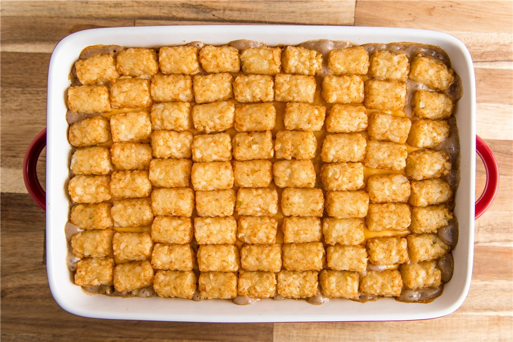

Hearty Veggie & Black Bean Tater Tot Hotdish
This Hearty Veggie & Black Bean Tater Tot Hotdish recipe is a hearty, plant-based twist on the classic Midwestern comfort food, designed for a clean, modern web interface. It uses black beans and vegetables to create a savory base, providing a "meaty" texture without the meat.

Photo: Google AI
The Story of the "Hotdish"
The Tater Tot Hotdish is more than just a meal; it is a cultural icon of the Upper Midwest, specifically Minnesota and North Dakota.
- Origins: The term "hotdish" first appeared in a 1930 Lutheran church cookbook in Mankato, Minnesota. Originally created during the Great Depression, these one-dish meals were designed by farm wives to stretch inexpensive ingredients like ground meat and canned vegetables to feed large families
- The Tater Tot Era: While the base existed in the 30s, the "Tater Tot" version didn't take off until 1953, when Ore-Ida invented tots as a way to use up leftover potato scraps.
- Cultural Significance: Today, it is a staple at family reunions, church potlucks, and communal gatherings. In Minnesota, making hotdish is even considered a "rite of passage" for joining the state congress.
- Prep Time
- Cook Time
- Yield
- 6-8 servings
Ingredients
The Tater Tots
- 1 bag (32 oz)
- Frozen tater tots
The Protein
- 1 can (15 oz)
- Black beans, drained and rinsed
The Vegetables
- 1 cup
- Corn (frozen or canned)
- 1 cup
- Bell peppers (red or green), diced
- 1 cup
- Spinach or kale, chopped
- 1/2 cup
- Onion, diced
The Creamy Base
- 1 can (10.5 oz)
- Condensed cream of mushroom soup (or vegetarian substitute)
- 1/2 cup
- Sour cream (or vegan sour cream)
The Seasoning
- 1 tsp
- Garlic powder
- 1 tsp
- Onion powder
- 1 tsp
- Smoked paprika
- Salt and black pepper to taste
- 1 cup
- Optional: 1 cup shredded cheddar cheese (or dairy-free alternative)
Instructions
- Prep: Preheat your oven to 375°F (190°C). Grease a 9x13 inch baking dish.
- Mix Base: In a large bowl, combine the black beans, corn, diced bell peppers, spinach, onion, condensed soup, sour cream, and spices. Stir until evenly mixed.
- Assemble: Spread the veggie mixture evenly into the bottom of the prepared baking dish.
- Top: Arrange the frozen tater tots in a single layer, tightly covering the top of the veggie mixture.
- Bake: Bake for 30-40 minutes, or until the filling is bubbly and the tater tots are golden brown and crispy.
- Serve: Let it stand for 5 minutes before serving.